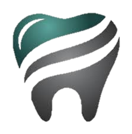

Odontología integral Echegaray
¿Quiénes somos?
Odontología Integral Echegaray ofrece un servicio de calidad e higiene para las
necesidades de estética y salud dental para los pacientes que acudan a nuestras instalaciones.
Visitenos en:
Calle: Blvd. Magnocentro 4, San Fernando La Herradura
Bosque de las Palmas,
52760 Huixquilucan, México
Telefonos:
0980-7787, 5678-6534